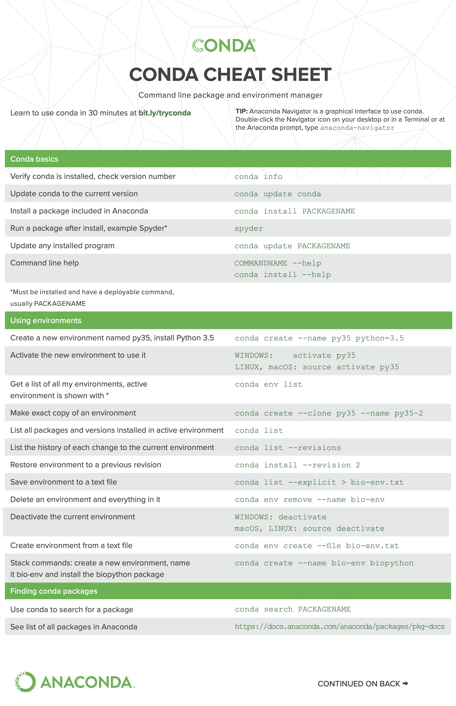

Cheatsheets#
Conda#

Docker#

Linux#

General tips#
When installing
psbody.mesh, installopenglin the linux container using the following commandNote
Perform this step after using the
make allcommandapt-get update && install python3-opengl conda install -c anaconda pyopengl
FLAME, MICA, DECA and FLAME fitting libraries use the same FLAME 2020 model. Don’t download them seperately (unless the library is being run individually) instead, use the same model. Create an account at
https://flame.is.tue.mpg.de/index.htmlto download all FLAME model related content.In the MICA container, use the
emteq_dcconda environment for code execution.Always install
opencv-python==4.6.0.68in all mesh libraries. Older versions ofopencvincorrectly orient.movand.MOVfiles.While installing the flame-fitting library, don’t clone the
eigenlibrary from github. Instead, download the 3.3 version from here.To use
jupyter-laborjupyter-notebookon a remote server (without VSCode or any code editor), use the following command:Note
The below command uses port forwarding to access
ipython-notebookson your local machine. Copy the URL (example: http://127.0.0.1:10000/lab?token=9b293f9673723248414a20f89ef0a936159b1d5714ba2832) in the browser.jupyter lab --ip 0.0.0.0 --port 10000 --allow-root
Avoid opening mesh analysis or shapecode analysis notebook files in VSCode or any code editor (they will crash). Use
jupyter-laborjupyter-notebookinstead.When executing
mesh.pyorparticipants.pychange the directory to the following:cd MICA/src/dc_analysis/notebooks
Issues:#
In the FLAME reverse fitting algorithm (used throughout this project in all code repos), the H2_FLAME models are not in the correct co-ordinate space as the fitting procedure converts the arbitrary mesh to FLAME co-ordinate space (by approximating a scaling factor). The scaled mesh is then used for conversion into FLAME. At the end of the code, the initially calculated scale needs to be re-applied to the output mesh to fix this problem but it would require the entire loading process to be repeated for each participant. Alternative, another script can be written which only calculates the scaling factors of all meshes and applies them to the previously created meshes.